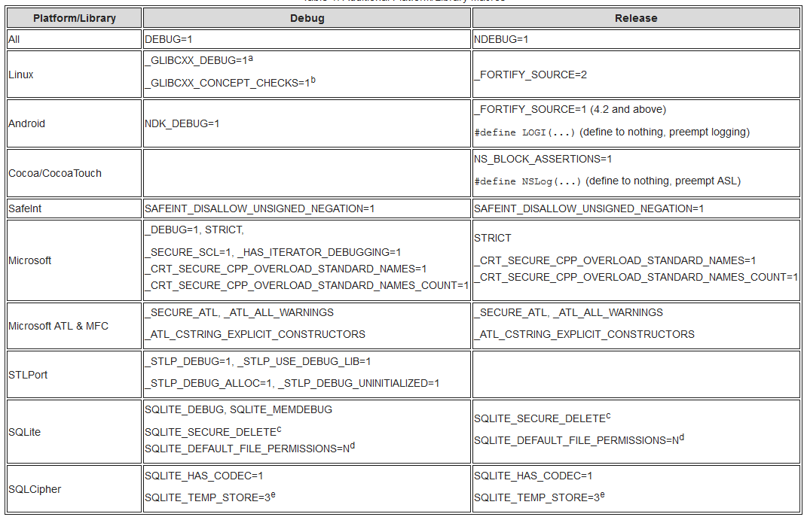
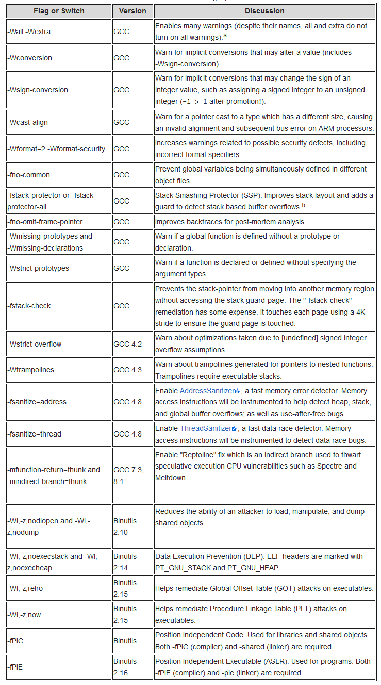
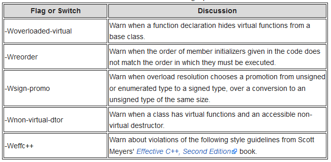
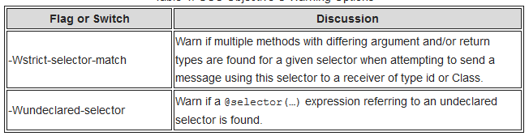
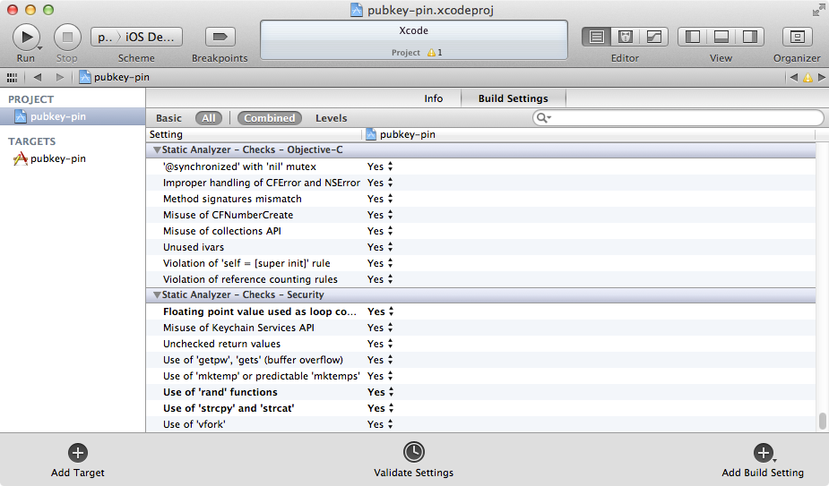
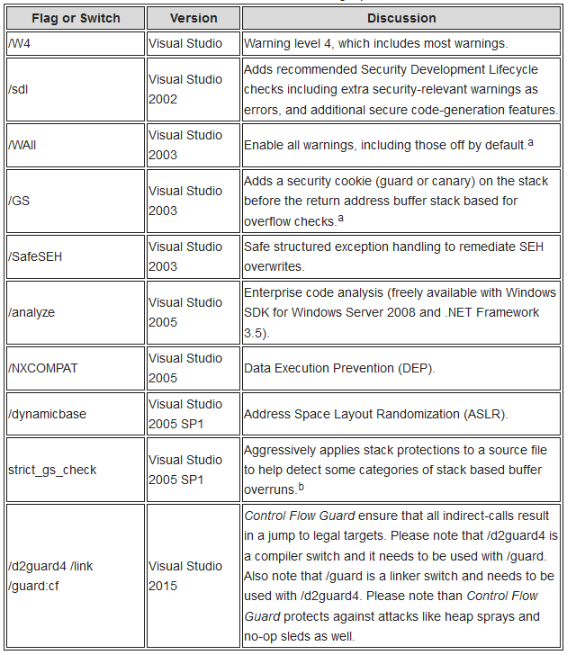
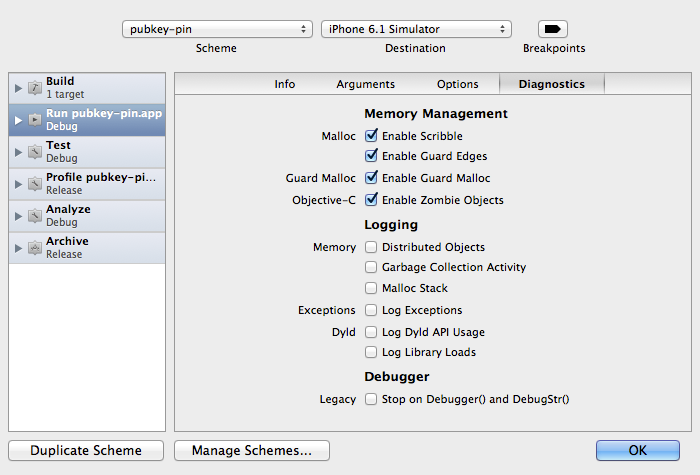
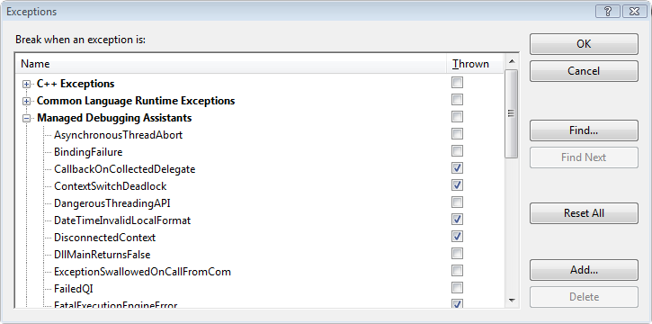

Introduction
C-Based Toolchain Hardening is a treatment of project settings that will help you deliver reliable and secure code when using C, C++ and Objective C languages in a number of development environments. This article will examine Microsoft and GCC toolchains for the C, C++ and Objective C languages. It will guide you through the steps you should take to create executables with firmer defensive postures and increased integration with the available platform security. Effectively configuring the toolchain also means your project will enjoy a number of benefits during development, including enhanced warnings and static analysis, and self-debugging code.
There are four areas to be examined when hardening the toolchain: configuration, preprocessor, compiler, and linker. Nearly all areas are overlooked or neglected when setting up a project. The neglect appears to be pandemic, and it applies to nearly all projects including Auto-configured projects, Makefile-based, Eclipse-based, Visual Studio-based, and Xcode-based. Its important to address the gaps at configuration and build time because its difficult to impossible to add hardening on a distributed executable after the fact on some platforms.
This is a prescriptive article, and it will not debate semantics or speculate on behavior. Some information, such as the C/C++ committee's motivation and pedigree for program diagnostics, NDEBUG, assert, and abort(), appears to be lost like a tale in the Lord of the Rings. As such, the article will specify semantics (for example, the philosophy of 'debug' and 'release' build configurations), assign behaviors (for example, what an assert should do in a 'debug' and 'release' build configurations), and present a position. If you find the posture is too aggressive, then you should back off as required to suite your taste.
A secure toolchain is not a silver bullet. It is one piece of an overall strategy in the engineering process to help ensure success. It will compliment existing processes such as static analysis, dynamic analysis, secure coding, negative test suites, and the like. Tools such as Valgrind and Helgrind will still be needed. And a project will still require solid designs and architectures.
The OWASP ESAPI C++ project eats its own dog food. Many of the examples you will see in this article come directly from the ESAPI C++ project.
Finally, a Cheat Sheet is available for those who desire a terse treatment of the material. Please visit C-Based Toolchain Hardening Cheat Sheet for the abbreviated version.
Wisdom
Code must be correct. It should be secure. It can be efficient.
Dr. Jon Bentley: "If it doesn't have to be correct, I can make it as fast as you'd like it to be".
Dr. Gary McGraw: "Thou shalt not rely solely on security features and functions to build secure software as security is an emergent property of the entire system and thus relies on building and integrating all parts properly".
Configuration
Configuration is the first opportunity to configure your project for success. Not only do you have to configure your project to meet reliability and security goals, you must also configure integrated libraries properly. You typically have has three choices. First, you can use auto-configuration utilities if on Linux or Unix. Second, you can write a makefile by hand. This is predominant on Linux, Mac OS X, and Unix, but it applies to Windows as well. Finally, you can use an integrated development environment or IDE.
Build Configurations
At this stage in the process, you should concentrate on configuring for two builds: Debug and Release. Debug will be used for development and include full instrumentation. Release will be configured for production. The difference between the two settings is usually optimization level and debug level. A third build configuration is Test, and its usually a special case of Release.
For debug and release builds, the settings are typically diametrically opposed. Debug configurations have no optimizations and full debug information; while Release builds have optimizations and minimal to moderate debug information. In addition, debug code has full assertions and additional library integration, such as mudflaps and malloc guards such as dmalloc.
The Test configuration is often a Release configuration that makes everything public for testing and builds a test harness. For example, all member functions public (C++ class) and all interfaces (library or shared object) should be made available for testing. Many Object Oriented purist oppose testing private interfaces, but this is not about object oriented-ness. This (q.v.) is about building reliable and secure software.
GCC 4.8 introduced an optimization of -Og. Note that it is only an optimization, and still requires a customary debug level via -g.
Debug Builds
Debug builds are where developers spend most of their time when vetting problems, so this build should concentrate forces and tools or be a 'force multiplier'. Though many do not realize, debug code is more highly valued than release code because its adorned with additional instrumentation. The debug instrumentation will cause a program to become nearly "self-debugging", and help you catch mistakes such as bad parameters, failed API calls, and memory problems.
Self-debugging code reduces your time during trouble shooting and debugging. Reducing time under the debugger means you have more time for development and feature requests. If code is checked in without debug instrumentation, it should be fixed by adding instrumentation or rejected.
For GCC, optimizations and debug symbolication are controlled through two switches: -O and -g. You should use the following as part of your CFLAGS and CXXFLAGS for a minimal debug session:
-O0 -g3 -ggdb
-O0 turns off optimizations and -g3 ensures maximum debug information is available. You may need to use -O1 so some analysis is performed. Otherwise, your debug build will be missing a number of warnings not present in release builds. -g3 ensures maximum debugging information is available for the debug session, including symbolic constants and #defines. -ggdb includes extensions to help with a debug session under GDB. For completeness, Jan Krachtovil stated -ggdb currently has no effect in a private email.
Release builds should also consider the configuration pair of -mfunction-return=thunk and -mindirect-branch=thunk. These are the "Reptoline" fix which is an indirect branch used to thwart speculative execution CPU vulnerabilities such as Spectre and Meltdown. The CPU cannot tell what code to speculatively execute because it is an indirect (as opposed to a direct) branch. This is an extra layer of indirection, like calling a pointer through a pointer.
Debug build should also define DEBUG, and ensure NDEBUG is not defined. NDEBUG removes "program diagnostics"; and has undesirable behavior and side effects which discussed below in more detail. The defines should be present for all code, and not just the program. You use it for all code (your program and included libraries) because you need to know how they fail too (remember, you take the bug report - not the third party library).
In addition, you should use other relevant flags, such as -fno-omit-frame-pointer. Ensuring a frame pointer exists makes it easier to decode stack traces. Since debug builds are not shipped, its OK to leave symbols in the executable. Programs with debug information do not suffer performance hits. See, for example, How does the gcc -g option affect performance?
Finally, you should ensure your project includes additional diagnostic libraries, such as dmalloc and Address Sanitizer. A comparison of some memory checking tools can be found at Comparison Of Memory Tools. If you don't include additional diagnostics in debug builds, then you should start using them sinces its OK to find errors you are not looking for.
Release Builds
Release builds are what your customer receives. They are meant to be run on production hardware and servers, and they should be reliable, secure, and efficient. A stable release build is the product of the hard work and effort during development.
For release builds, you should use the following as part of CFLAGS and CXXFLAGS for release builds:
-On -g2
-On sets optimizations for speed or size (for example, -Os or -O2), and -g2 ensure debugging information is created.
Debugging information should be stripped and retained in case of symbolication for a crash report from the field. While not desired, debug information can be left in place without a performance penalty. See How does the gcc -g option affect performance? for details.
Release builds should also define NDEBUG, and ensure DEBUG is not defined. The time for debugging and diagnostics is over, so users get production code with full optimizations, no "programming diagnostics", and other efficiencies. If you can't optimize or your are performing excessive logging, it usually means the program is not ready for production.
If you have been relying on an assert and then a subsequent abort(), you have been abusing "program diagnostics" since it has no place in production code. If you want a memory dump, create one so users don't have to worry about secrets and other sensitive information being written to the filesystem and emailed in plain text.
For Windows, you would use /Od for debug builds; and /Ox, /O2 or /Os for release builds. See Microsoft's /O Options (Optimize Code) for details.
Test Builds
Test builds are used to provide heuristic validation by way of positive and negative test suites. Under a test configuration, all interfaces are tested to ensure they perform to specification and satisfaction. "Satisfaction" is subjective, but it should include no crashing and no trashing of your memory arena, even when faced with negative tests.
Because all interfaces are tested (and not just the public ones), your CFLAGS and CXXFLAGS should include:
-Dprotected=public -Dprivate=public
You should also change __attribute__ ((visibility ("hidden"))) to __attribute__ ((visibility ("default"))).
Nearly everyone gets a positive test right, so no more needs to be said. The negative self tests are much more interesting, and you should concentrate on trying to make your program fail so you can verify its fails gracefully. Remember, a bad guy is not going to be courteous when he attempts to cause your program to fail. And its your project that takes egg on the face by way of a bug report or guest appearance on Full Disclosure or Bugtraq - not <some library> you included.
Auto Tools
Auto configuration tools are popular on many Linux and Unix based systems, and the tools include Autoconf, Automake, config, and Configure. The tools work together to produce project files from scripts and template files. After the process completes, your project should be setup and ready to be made with make.
When using auto configuration tools, there are a few files of interest worth mentioning. The files are part of the auto tools chain and include m4 and the various *.in, *.ac (autoconf), and *.am (automake) files. At times, you will have to open them, or the resulting makefiles, to tune the "stock" configuration.
There are three downsides to the command line configuration tools in the toolchain: (1) they often ignore user requests, (2) they cannot create configurations, and (3) security is often not a goal.
To demonstrate the first issue, confider your project with the following: configure CFLAGS="-Wall -fPIE" CXXFLAGS="-Wall -fPIE" LDFLAGS="-pie". You will probably find the auto tools ignored your request, which means the command below will not produce expected results. As a work around, you will have to open an m4 scripts, Makefile.in or Makefile.am and fix the configuration.
$ configure CFLAGS="-Wall -Wextra -Wconversion -fPIE -Wno-unused-parameter
-Wformat=2 -Wformat-security -fstack-protector-all -Wstrict-overflow"
LDFLAGS="-pie -z,noexecstack -z,noexecheap -z,relro -z,now"
For the second point, you will probably be disappointed to learn Automake does not support the concept of configurations. Its not entirely Autoconf's or Automake's fault - Make and its inability to detect changes is the underlying problem. Specifically, Make only checks modification times of prerequisites and targets, and does not check things like CFLAGS and CXXFLAGS. The net effect is you will not receive expected results when you issue make debug and then make test or make release.
Finally, you will probably be disappointed to learn tools such as Autoconf and Automake miss many security related opportunities and ship insecure out of the box. There are a number of compiler switches and linker flags that improve the defensive posture of a program, but they are not 'on' by default. Tools like Autoconf - which are supposed to handle this situation - often provides setting to serve the lowest of all denominators.
A recent discussion on the Automake mailing list illuminates the issue: Enabling compiler warning flags. Attempts to improve default configurations were met with resistance and no action was taken. The resistance is often of the form, "<some useful warning> also produces false positives" or "<some obscure platform> does not support <established security feature>". Its noteworthy that David Wheeler, the author of Secure Programming for Linux and Unix HOWTO, was one of the folks trying to improve the posture.
Makefiles
Make is one of the earliest build systems dating back to the 1970s. Its available on Linux, Mac OS X and Unix, so you will frequently encounter projects using it. Unfortunately, Make has a number of short comings (Recursive Make Considered Harmful and What's Wrong With GNU make?), and can cause some discomfort. Despite issues with Make, ESAPI C++ uses Make primarily for three reasons: first, its omnipresent; second, its easier to manage than the Auto Tools family; and third, libtool was out of the question.
Consider what happens when you: (1) type make debug, and then type make release. Each build would require different CFLAGS due to optimizations and level of debug support. In your makefile, you would extract the relevant target and set CFLAGS and CXXFLAGS similar to below (taken from ESAPI C++ Makefile):
# Makefile
DEBUG_GOALS = $(filter $(MAKECMDGOALS), debug)
ifneq ($(DEBUG_GOALS),)
WANT_DEBUG := 1
WANT_TEST := 0
WANT_RELEASE := 0
endif
…
ifeq ($(WANT_DEBUG),1)
ESAPI_CFLAGS += -DDEBUG=1 -UNDEBUG -g3 -ggdb -O0
ESAPI_CXXFLAGS += -DDEBUG=1 -UNDEBUG -g3 -ggdb -O0
endif
ifeq ($(WANT_RELEASE),1)
ESAPI_CFLAGS += -DNDEBUG=1 -UDEBUG -g -O2
ESAPI_CXXFLAGS += -DNDEBUG=1 -UDEBUG -g -O2
endif
ifeq ($(WANT_TEST),1)
ESAPI_CFLAGS += -DESAPI_NO_ASSERT=1 -g2 -ggdb -O2 -Dprivate=public
-Dprotected=public
ESAPI_CXXFLAGS += -DESAPI_NO_ASSERT=1 -g2 -ggdb -O2 -Dprivate=public
-Dprotected=public
endif
…
# Merge ESAPI flags with user supplied flags. We perform the extra step to ensure
# user options follow our options, which should give user option's a preference.
override CFLAGS := $(ESAPI_CFLAGS) $(CFLAGS)
override CXXFLAGS := $(ESAPI_CXXFLAGS) $(CXXFLAGS)
override LDFLAGS := $(ESAPI_LDFLAGS) $(LDFLAGS)
…
Make will first build the program in a debug configuration for a session under the debugger using a rule similar to:
%.cpp:%.o:
$(CXX) $(CPPFLAGS) $(CXXFLAGS) -c $< -o $@
When you want the release build, Make will do nothing because it considers everything up to date despite the fact CFLAGS and CXXFLAGS have changed. Hence, your program will actually be in a debug configuration and risk a SIGABRT at runtime because debug instrumentation is present (recall assert calls abort() when NDEBUG is not defined). In essence, you have DoS'd yourself due to make.
In addition, many projects do not honor the user's command line. ESAPI C++ does its best to ensure a user's flags are honored via override as shown above, but other projects do not. For example, consider a project that should be built with Position Independent Executable (PIE or ASLR) enabled and data execution prevention (DEP) enabled. Dismissing user settings combined with insecure out of the box settings (and not picking them up during auto-setup or auto-configure) means a program built with the following will likely have neither defense:
$ make CFLAGS="-fPIE" CXXFLAGS="-fPIE" LDFLAGS="-pie -z,noexecstack, -z,noexecheap"
Defenses such as ASLR and DEP are especially important on Linux because Data Execution - not Prevention - is the norm.
Integration
Project level integration presents opportunities to harden your program or library with domain specific knowledge. For example, if the platform supports Position Independent Executables (PIE or ASLR) and data execution prevention (DEP), then you should integrate with it. The consequences of not doing so could result in exploitation. As a case in point, see KingCope's 0-days for MySQL in December, 2012 (CVE-2012-5579 and CVE-2012-5612, among others). Integration with platform security would have neutered a number of the 0-days.
You also have the opportunity to include helpful libraries that are not need for business logic support. For example, if you are working on a platform with DMalloc or Address Sanitizer, you should probably use it in your debug builds. For Ubuntu, DMalloc available from the package manager and can be installed with sudo apt-get install libdmalloc5. For Apple platforms, its available as a scheme option. Address Sanitizer is available in GCC 4.8 and above for many platforms.
In addition, project level integration is an opportunity to harden third party libraries you chose to include. Because you chose to include them, you and your users are responsible for them. If you or your users endure a SP800-53 audit, third party libraries will be in scope because the supply chain is included (specifically, item SA-12, Supply Chain Protection). The audits are not limited to those in the US Federal arena - financial institutions perform reviews too. A perfect example of violating this guidance is CVE-2012-1525, which was due to Adobe's inclusion of a defective Sablotron library.
Another example is including OpenSSL. You know (1) SSLv2 is insecure, (2) SSLv3 is insecure, and (3) compression is insecure (among others). In addition, suppose you don't use hardware and engines, and only allow static linking. Given the knowledge and specifications, you would configure the OpenSSL library as follows:
$ Configure darwin64-x86_64-cc -no-hw -no-engine -no-comp -no-shared
-no-dso -no-ssl2 -no-ssl3 --openssldir=…
Note Well: you might want engines, especially on Ivy Bridge microarchitectures (3rd generation Intel Core i5 and i7 processors). To have OpenSSL use the processor's random number generator (via the of rdrand instruction), you will need to call OpenSSL's ENGINE_load_rdrand() function and then ENGINE_set_default with ENGINE_METHOD_RAND. See OpenSSL's Random Numbers for details.
If you configure without the switches, then you will likely have vulnerable code/libraries and risk failing an audit. If the program is a remote server, then the following command will reveal if compression is active on the channel:
$ echo "GET / HTTP1.0" | openssl s_client -connect <nowiki>example.com:443</nowiki>
nm or openssl s_client will show that compression is enabled in the client. In fact, any symbol within the OPENSSL_NO_COMP preprocessor macro will bear witness since -no-comp is translated into a CFLAGS define.
$ nm /usr/local/ssl/iphoneos/lib/libcrypto.a 2>/dev/null | egrep -i "(COMP_CTX_new|COMP_CTX_free)"
0000000000000110 T COMP_CTX_free
0000000000000000 T COMP_CTX_new
Even more egregious is the answer given to auditors who specifically ask about configurations and protocols: "we don't use weak/wounded/broken ciphers" or "we follow best practices." The use of compression tells the auditor that you are using wounded protocol in an insecure configuration and you don't follow best practices. That will likely set off alarm bells, and ensure the auditor dives deeper on more items.
Preprocessor
The preprocessor is crucial to setting up a project for success. The C committee provided one macro - NDEBUG - and the macro can be used to derive a number of configurations and drive engineering processes. Unfortunately, the committee also left many related items to chance, which has resulted in programmers abusing builtin facilities. This section will help you set up you projects to integrate well with other projects and ensure reliability and security.
There are three topics to discuss when hardening the preprocessor. The first is well defined configurations which produce well defined behaviors, the second is useful behavior from assert, and the third is proper use of macros when integrating vendor code and third party libraries.
Configurations
To remove ambiguity, you should recognize two configurations: Release and Debug. Release is for production code on live servers, and its behavior is requested via the C/C++ NDEBUG macro. Its also the only macro observed by the C and C++ Committees and Posix. Diametrically opposed to release is Debug. While there is a compelling argument for !defined(NDEBUG), you should have an explicit macro for the configuration and that macro should be DEBUG. This is because vendors and outside libraries use DEBUG (or similar) macro for their configuration. For example, Carnegie Mellon's Mach kernel uses DEBUG, Microsoft's CRT uses _DEBUG, and Wind River Workbench uses DEBUG_MODE.
In addition to NDEBUG (Release) and DEBUG (Debug), you have two additional cross products: both are defined or neither are defined. Defining both should be an error, and defining neither should default to a release configuration. Below is from ESAPI C++ EsapiCommon.h, which is the configuration file used by all source files:
// Only one or the other, but not both
#if (defined(DEBUG) || defined(_DEBUG)) && (defined(NDEBUG)
|| defined(_NDEBUG))
# error Both DEBUG and NDEBUG are defined.
#endif
// The only time we switch to debug is when asked.
// NDEBUG or {nothing} results
// in release build (fewer surprises at runtime).
#if defined(DEBUG) || defined(_DEBUG)
# define ESAPI_BUILD_DEBUG 1
#else
# define ESAPI_BUILD_RELEASE 1
#endif
When DEBUG is in effect, your code should receive full debug instrumentation, including the full force of assertions.
ASSERT
Asserts will help you create self-debugging code by helping you find the point of first failure quickly and easily. Asserts should be used throughout your program, including parameter validation, return value checking and program state. The assert will silently guard your code through its lifetime. It will always be there, even when not debugging a specific component of a module. If you have thorough code coverage, you will spend less time debugging and more time developing because programs will debug themselves.
To use asserts effectively, you should assert everything. That includes parameters upon entering a function, return values from function calls, and any program state. Everywhere you place an if statement for validation or checking, you should have an assert. Everywhere you have an assert for validation or checking, you should have an if statement. They go hand-in-hand.
If you are still using printf's, then you have an opportunity for improvement. In the time it takes for you to write a printf or NSLog statement, you could have written an assert. Unlike the printf or NSLog which are often removed when no longer needed, the assert stays active forever. Remember, this is all about finding the point of first failure quickly so you can spend your time doing other things.
There is one problem with using asserts - Posix states assert should call abort() if NDEBUG is not defined. When debugging, NDEBUG will never be defined since you want the "program diagnostics" (quote from the Posix description). The behavior makes assert and its accompanying abort() completely useless for development. The result of "program diagnostics" calling abort() due to standard C/C++ behavior is disuse - developers simply don't use them. Its incredibly bad for the development community because self-debugging programs can help eradicate so many stability problems.
Since self-debugging programs are so powerful, you will have to have to supply your own assert and signal handler with improved behavior. Your assert will exchange auto-aborting behavior for auto-debugging behavior. The auto-debugging facility will ensure the debugger snaps when a problem is detected, and you will find the point of first failure quickly and easily.
ESAPI C++ supplies its own assert with the behavior described above. In the code below, ASSERT raises SIGTRAP when in effect or it evaluates to void in other cases.
// A debug assert which should be sprinkled liberally.
// This assert fires and then continues rather
// than calling abort(). Useful when examining negative
// test cases from the command line.
#if (defined(ESAPI_BUILD_DEBUG) && defined(ESAPI_OS_STARNIX))
# define ESAPI_ASSERT1(exp) { \
if(!(exp)) { \
std::ostringstream oss; \
oss << "Assertion failed: " << (char*)(__FILE__) << "(" \
<< (int)__LINE__ << "): " << (char*)(__func__) \
<< std::endl; \
std::cerr << oss.str(); \
raise(SIGTRAP); \
} \
}
# define ESAPI_ASSERT2(exp, msg) { \
if(!(exp)) { \
std::ostringstream oss; \
oss << "Assertion failed: " << (char*)(__FILE__) << "(" \
<< (int)__LINE__ << "): " << (char*)(__func__) \
<< ": \"" << (msg) << "\"" << std::endl; \
std::cerr << oss.str(); \
raise(SIGTRAP); \
} \
}
#elif (defined(ESAPI_BUILD_DEBUG) && defined(ESAPI_OS_WINDOWS))
# define ESAPI_ASSERT1(exp) assert(exp)
# define ESAPI_ASSERT2(exp, msg) assert(exp)
#else
# define ESAPI_ASSERT1(exp) ((void)(exp))
# define ESAPI_ASSERT2(exp, msg) ((void)(exp))
#endif
#if !defined(ASSERT)
# define ASSERT(exp) ESAPI_ASSERT1(exp)
#endif
At program startup, a SIGTRAP handler will be installed if one is not provided by another component:
struct DebugTrapHandler
{
DebugTrapHandler()
{
struct sigaction new_handler, old_handler;
do
{
int ret = 0;
ret = sigaction (SIGTRAP, NULL, &old_handler);
if (ret != 0) break; // Failed
// Don't step on another's handler
if (old_handler.sa_handler != NULL) break;
new_handler.sa_handler = &DebugTrapHandler::NullHandler;
new_handler.sa_flags = 0;
ret = sigemptyset (&new_handler.sa_mask);
if (ret != 0) break; // Failed
ret = sigaction (SIGTRAP, &new_handler, NULL);
if (ret != 0) break; // Failed
} while(0);
}
static void NullHandler(int /*unused*/) { }
};
// We specify a relatively low priority, to make sure we run before other CTORs
// http://gcc.gnu.org/onlinedocs/gcc/C_002b_002b-Attributes.html#C_002b_002b-Attributes
static const DebugTrapHandler g_dummyHandler __attribute__ ((init_priority (110)));
On a Windows platform, you would call _set_invalid_parameter_handler (and possibly set_unexpected or set_terminate) to install a new handler.
Live hosts running production code should always define NDEBUG (i.e., release configuration), which means they do not assert or auto-abort. Auto-abortion is not acceptable behavior, and anyone who asks for the behavior is completely abusing the functionality of "program diagnostics". If a program wants a core dump, then it should create the dump rather than crashing.
For more reading on asserting effectively, please see one of John Robbin's books, such as Debugging Applications. John is a legendary bug slayer in Windows circles, and he will show you how to do nearly everything, from debugging a simple program to bug slaying in multithreaded programs.
Additional Macros
Additional macros include any macros needed to integrate properly and securely. It includes integrating the program with the platform (for example MFC or Cocoa/CocoaTouch) and libraries (for example, Crypto++ or OpenSSL). It can be a challenge because you have to have proficiency with your platform and all included libraries and frameworks. The list below illustrates the level of detail you will need when integrating.
Though Boost is missing from the list, it appears to lack recommendations, additional debug diagnostics, and a hardening guide. See BOOST Hardening Guide (Preprocessor Macros) for details. In addition, Tim Day points to [boost.build] should we not define _SECURE_SCL=0 by default for all msvc toolsets for a recent discussion related to hardening (or lack thereof).
In addition to what you should define, defining some macros and undefining others should trigger a security related defect. For example, -U_FORTIFY_SOURCES on Linux and _CRT_SECURE_NO_WARNINGS=1, _SCL_SECURE_NO_WARNINGS, _ATL_SECURE_NO_WARNINGS or STRSAFE_NO_DEPRECATE on Windows.

a) Be careful with _GLIBCXX_DEBUG when using pre-compiled libraries such as Boost from a distribution. There are ABI incompatibilities, and the result will likely be a crash. You will have to compile Boost with _GLIBCXX_DEBUG or omit _GLIBCXX_DEBUG.
b) See Chapter 5, Diagnostics of the libstdc++ manual for details.
c) SQLite secure deletion zeroizes memory on destruction. Define as required, and always define in US Federal since zeroization is required for FIPS 140-2, Level 1.
d) N is 0644 by default, which means everyone has some access.
e) Force temporary tables into memory (no unencrypted data to disk).
Compiler and Linker
Compiler writers provide a rich set of warnings from the analysis of code during compilation. Both GCC and Visual Studio have static analysis capabilities to help find mistakes early in the development process. The built in static analysis capabilities of GCC and Visual Studio are usually sufficient to ensure proper API usage and catch a number of mistakes such as using an uninitialized variable or comparing a negative signed int and a positive unsigned int.
As a concrete example, (and for those not familiar with C/C++ promotion rules), a warning will be issued if a signed integer is promoted to an unsigned integer and then compared because a side effect is -1 > 1 after promotion! GCC and Visual Studio will not currently catch, for example, SQL injections and other tainted data usage. For that, you will need a tool designed to perform data flow analysis or taint analysis.
Some in the development community resist static analysis or refute its results. For example, when static analysis warned the Linux kernel's sys_prctl was comparing an unsigned value against less than zero, Jesper Juhl offered a patch to clean up the code. Linus Torvalds howled "No, you don't do this… GCC is crap" (referring to compiling with warnings). For the full discussion, see [PATCH] Don't compare unsigned variable for <0 in sys_prctl() from the Linux Kernel mailing list.
The following sections will detail steps for three platforms. First is a typical GNU Linux based distribution offering GCC and Binutils, second is Clang and Xcode, and third is modern Windows platforms.
Distribution Hardening
Before discussing GCC and Binutils, it would be a good time to point out some of the defenses discussed below are all ready present in a distribution. Unfortunately, its design by committee, so what is present is usually only a mild variation of what is available (this way, everyone is mildly offended). For those who are purely worried about performance, you might be surprised to learn you have already taken the small performance hint without even knowing.
Linux and BSD distributions often apply some hardening without intervention via GCC Spec Files. If you are using Debian, Ubuntu, Linux Mint and family, see Debian Hardening. For Red Hat and Fedora systems, see New hardened build support (coming) in F16. Gentoo users should visit Hardened Gentoo.
You can see the settings being used by a distribution via gcc -dumpspecs. From Linux Mint 12 below, -fstack-protector (but not -fstack-protector-all) is used by default.
$ gcc -dumpspecs
…
*link_ssp: %{fstack-protector:}
*ssp_default: %{!fno-stack-protector:%{!fstack-protector-all:
%{!ffreestanding:%{!nostdlib:-fstack-protector}}}}
…
The "SSP" above stands for Stack Smashing Protector. SSP is a reimplementation of Hiroaki Etoh's work on IBM Pro Police Stack Detector. See Hiroaki Etoh's patch gcc stack-smashing protector and IBM's GCC extension for protecting applications from stack-smashing attacks for details.
GCC/Binutils
GCC (the compiler collection) and Binutils (the assemblers, linkers, and other tools) are separate projects that work together to produce a final executable. Both the compiler and linker offer options to help you write safer and more secure code. The linker will produce code which takes advantage of platform security features offered by the kernel and PaX, such as no-exec stacks and heaps (NX) and Position Independent Executable (PIE).
The table below offers a set of compiler options to build your program. Static analysis warnings help catch mistakes early, while the linker options harden the executable at runtime. In the table below, "GCC" should be loosely taken as "non-ancient distributions." While the GCC team considers 4.2 ancient, you will still encounter it on Apple and BSD platforms due to changes in GPL licensing around 2007. Refer to GCC Option Summary, Options to Request or Suppress Warnings and Binutils (LD) Command Line Options for usage details.
Noteworthy of special mention are -fno-strict-overflow and -fwrapvₐ. The flags ensure the compiler does not remove statements that result in overflow or wrap. If your program only runs correctly using the flags, it is likely violating C/C++ rules on overflow and illegal. If the program is illegal due to overflow or wrap checking, you should consider using safe-iop for C or David LeBlanc's SafeInt in C++.
For a project compiled and linked with hardened settings, some of those settings can be verified with the Checksec tool written by Tobias Klein. The checksec.sh script is designed to test standard Linux OS and PaX security features being used by an application. See the Trapkit web page for details.
GCC C Warning Options table:

a) Unlike Clang and -Weverything, GCC does not provide a switch to truly enable all warnings. b) -fstack-protector guards functions with high risk objects such as C strings, while -fstack-protector-all guards all objects.
Additional C++ warnings which can be used include the following in Table 3. See GCC's Options Controlling C++ Dialect for additional options and details.
GCC C++ Warning Options table:

Effective C++, Second Edition book.
And additional Objective C warnings which are often useful include the following. See Options Controlling Objective-C and Objective-C++ Dialects for additional options and details.
GCC Objective C Warning Options table:

The use of aggressive warnings will produce spurious noise. The noise is a tradeoff - you can learn of potential problems at the cost of wading through some chaff. The following will help reduces spurious noise from the warning system:
-Wno-unused-parameter(GCC)-Wno-type-limits(GCC 4.3)-Wno-tautological-compare(Clang)
Finally, a simple version based Makefile example is shown below. This is different than feature based makefile produced by auto tools (which will test for a particular feature and then define a symbol or configure a template file). Not all platforms use all options and flags. To address the issue you can pursue one of two strategies. First, you can ship with a weakened posture by servicing the lowest common denominator; or you can ship with everything in force. In the latter case, those who don't have a feature available will edit the makefile to accommodate their installation.
CXX=g++
EGREP = egrep
…
GCC_COMPILER = $(shell $(CXX) -v 2>&1 | $(EGREP) -i -c '^gcc version')
GCC41_OR_LATER = $(shell $(CXX) -v 2>&1 | $(EGREP) -i -c '^gcc version (4\.[1-9]|[5-9])')
…
GNU_LD210_OR_LATER = $(shell $(LD) -v 2>&1 | $(EGREP) -i -c '^gnu ld .* (2\.1[0-9]|2\.[2-9])')
GNU_LD214_OR_LATER = $(shell $(LD) -v 2>&1 | $(EGREP) -i -c '^gnu ld .* (2\.1[4-9]|2\.[2-9])')
…
ifeq ($(GCC_COMPILER),1)
MY_CC_FLAGS += -Wall -Wextra -Wconversion
MY_CC_FLAGS += -Wformat=2 -Wformat-security
MY_CC_FLAGS += -Wno-unused-parameter
endif
ifeq ($(GCC41_OR_LATER),1)
MY_CC_FLAGS += -fstack-protector-all
endif
ifeq ($(GCC42_OR_LATER),1)
MY_CC_FLAGS += -Wstrict-overflow
endif
ifeq ($(GCC43_OR_LATER),1)
MY_CC_FLAGS += -Wtrampolines
endif
ifeq ($(GNU_LD210_OR_LATER),1)
MY_LD_FLAGS += -z,nodlopen -z,nodump
endif
ifeq ($(GNU_LD214_OR_LATER),1)
MY_LD_FLAGS += -z,noexecstack -z,noexecheap
endif
ifeq ($(GNU_LD215_OR_LATER),1)
MY_LD_FLAGS += -z,relro -z,now
endif
ifeq ($(GNU_LD216_OR_LATER),1)
MY_CC_FLAGS += -fPIE
MY_LD_FLAGS += -pie
endif
# Use 'override' to honor the user's command line
override CFLAGS := $(MY_CC_FLAGS) $(CFLAGS)
override CXXFLAGS := $(MY_CC_FLAGS) $(CXXFLAGS)
override LDFLAGS := $(MY_LD_FLAGS) $(LDFLAGS)
…
Clang/Xcode
Clang and LLVM have been aggressively developed since Apple lost its GPL compiler back in 2007 (due to Tivoization which resulted in GPLv3). Since that time, a number of developers and Goggle have joined the effort. While Clang will consume most (all?) GCC/Binutil flags and switches, the project supports a number of its own options, including a static analyzer. In addition, Clang is relatively easy to build with additional diagnostics, such as Dr. John Regher and Peng Li's Integer Overflow Checker (IOC).
IOC is incredibly useful, and has found bugs in a number of projects, from the Linux Kernel (include/linux/bitops.h, still unfixed), SQLite, PHP, Firefox (many still unfixed), LLVM, and Python. Future version of Clang (Clang 3.3 and above) will allow you to enable the checks out of the box with -fsanitize=integer and -fsanitize=shift.
Clang options can be found at Clang Compiler User's Manual. Clang does include an option to turn on all warnings - -Weverything. Use it with care but use it regularly since you will get back a lot of noise and issues you missed. For example, add -Weverything for production builds and make non-spurious issues a quality gate. Under Xcode, simply add -Weverything to CFLAGS and CXXFLAGS.
In addition to compiler warnings, both static analysis and additional security checks can be performed. Reading on Clang's static analysis capabilities can be found at Clang Static Analyzer. Figure 1 below shows some of the security checks utilized by Xcode.

Visual Studio
Visual Studio offers a convenient Integrated Development Environment (IDE) for managing solutions and their settings. the section called "Visual Studio Options" discusses option which should be used with Visual Studio, and the section called "Project Properties" demonstrates incorporating those options into a solution's project.
The table below lists the compiler and linker switches which should be used under Visual Studio. Refer to Howard and LeBlanc's Writing Secure Code (Microsoft Press) for a detailed discussion; or Protecting Your Code with Visual C++ Defenses in Security Briefs by Michael Howard. In the table below, "Visual Studio" refers to nearly all versions of the development environment, including Visual Studio 5.0 and 6.0.
For a project compiled and linked with hardened settings, those settings can be verified with BinScope. BinScope is a verification tool from Microsoft that analyzes binaries to ensure that they have been built in compliance with Microsoft's Security Development Lifecycle (SDLC) requirements and recommendations. See the BinScope Binary Analyzer download page for details.

a) See Jon Sturgeon's discussion of the switch at Off By Default Compiler Warnings in Visual C++.
a) When using /GS, there are a number of circumstances which affect the inclusion of a security cookie. For example, the guard is not used if there is no buffer in the stack frame, optimizations are disabled, or the function is declared naked or contains inline assembly.
b) #pragma strict_gs_check(on) should be used sparingly, but is recommend in high risk situations, such as when a source file parses input from the internet.
Warn Suppression
From the tables above, a lot of warnings have been enabled to help detect possible programming mistakes. The potential mistakes are detected via compiler which carries around a lot of contextual information during its code analysis phase. At times, you will receive spurious warnings because the compiler is not that smart. Its understandable and even a good thing (how would you like to be out of a job because a program writes its own programs?). At times you will have to learn how to work with the compiler's warning system to suppress warnings. Notice what was not said: turn off the warnings.
Suppressing warnings placates the compiler for spurious noise so you can get to the issues that matter (you are separating the wheat from the chaff). This section will offer some hints and point out some potential minefields. First is an unused parameter (for example, argc or argv). Suppressing unused parameter warnings is especially helpful for C++ and interface programming, where parameters are often unused. For this warning, simply define an "UNUSED" macro and warp the parameter:
#define UNUSED_PARAMETER(x) ((void)x)
…
int main(int argc, char* argv[])
{
UNUSED_PARAMETER(argc);
UNUSED_PARAMETER(argv);
…
}
A potential minefield lies near "comparing unsigned and signed" values, and -Wconversion will catch it for you. This is because C/C++ promotion rules state the signed value will be promoted to an unsigned value and then compared. That means -1 > 1 after promotion! To fix this, you cannot blindly cast - you must first range test the value:
int x = GetX();
unsigned int y = GetY();
ASSERT(x >= 0);
if(!(x >= 0))
throw runtime_error("WTF??? X is negative.");
if(static_cast<unsigned int>(x) > y)
cout << "x is greater than y" << endl;
else
cout << "x is not greater than y" << endl;
Notice the code above will debug itself - you don't need to set a breakpoint to see if there is a problem with x. Just run the program and wait for it to tell you there is a problem. If there is a problem, the program will snap the debugger (and more importantly, not call a useless abort() as specified by Posix). It beats the snot out of printf that are removed when no longer needed or pollute outputs.
Another conversion problem you will encounter conversion between types, and -Wconversion will also catch it for you. The following will always have an opportunity to fail, and should light up like a Christmas tree:
struct sockaddr_in addr;
…
addr.sin_port = htons(atoi(argv[2]));
The following would probably serve you much better. Notice atoi and fiends are not used because they can silently fail. In addition, the code is instrumented so you don't need to waste a lot of time debugging potential problems:
const char* cstr = GetPortString();
ASSERT(cstr != NULL);
if(!(cstr != NULL))
throw runtime_error("WTF??? Port string is not valid.");
istringstream iss(cstr);
long long t = 0;
iss >> t;
ASSERT(!(iss.fail()));
if(iss.fail())
throw runtime_error("WTF??? Failed to read port.");
// Should this be a port above the reserved range ([0-1024] on Unix)?
ASSERT(t > 0);
if(!(t > 0))
throw runtime_error("WTF??? Port is too small");
ASSERT(t < static_cast<long long>(numeric_limits<unsigned int>::max()));
if(!(t < static_cast<long long>(numeric_limits<unsigned int>::max())))
throw runtime_error("WTF??? Port is too large");
// OK to use port
unsigned short port = static_cast<unsigned short>(t);
…
Again, notice the code above will debug itself - you don't need to set a breakpoint to see if there is a problem with port. This code will continue checking conditions, years after being instrumented (assuming to wrote code to read a config file early in the project). There's no need to remove the ASSERTs as with printf since they are silent guardians.
Another useful suppression trick is too avoid ignoring return values. Not only is it useful to suppress the warning, its required for correct code. For example, snprint will alert you to truncations through its return value. You should not make them silent truncations by ignoring the warning or casting to void:
char path[PATH_MAX];
…
int ret = snprintf(path, sizeof(path), "%s/%s", GetDirectory(), GetObjectName());
ASSERT(ret != -1);
ASSERT(!(ret >= sizeof(path)));
if(ret == -1 || ret >= sizeof(path))
throw runtime_error("WTF??? Unable to build full object name");
// OK to use path
…
The problem is pandemic, and not just boring user land programs. Projects which offer high integrity code, such as SELinux, suffer silent truncations. The following is from an approved SELinux patch even though a comment was made that it suffered silent truncations in its security_compute_create_name function from compute_create.c.
12 int security_compute_create_raw(security_context_t scon,
13 security_context_t tcon,
14 security_class_t tclass,
15 security_context_t * newcon)
16 {
17 char path[PATH_MAX];
18 char *buf;
19 size_t size;
20 int fd, ret;
21
22 if (!selinux_mnt) {
23 errno = ENOENT;
24 return -1;
25 }
26
27 snprintf(path, sizeof path, "%s/create", selinux_mnt);
28 fd = open(path, O_RDWR);
Unlike other examples, the above code will not debug itself, and you will have to set breakpoints and trace calls to determine the point of first failure. (And the code above gambles that the truncated file does not exist or is not under an adversary's control by blindly performing the open).
Runtime
The previous sections concentrated on setting up your project for success. This section will examine additional hints for running with increased diagnostics and defenses. Not all platforms are created equal - GNU Linux is difficult to impossible to add hardening to a program after compiling and static linking; while Windows allows post-build hardening through a download. Remember, the goal is to find the point of first failure quickly so you can improve the reliability and security of the code.
Xcode
Xcode offers additional Application Diagnostics that can help find memory errors and object use problems. Schemes can be managed through Products menu item, Scheme submenu item, and then Edit. From the editor, navigate to the Diagnostics tab. In the figure below, four additional instruments are enabled for the debugging cycle: Scribble guards, Edge guards, Malloc guards, and Zombies.

There is one caveat with using some of the guards: Apple only provides them for the simulator, and not a device. In the past, the guards were available for both devices and simulators.
Windows
Visual Studio offers a number of debugging aides for use during development. The aides are called Managed Debugging Assistants (MDAs). You can find the MDAs on the Debug menu, then Exceptions submenu. MDAs allow you to tune your debugging experience by, for example, filter exceptions for which the debugger should snap. For more details, see Stephen Toub's Let The CLR Find Bugs For You With Managed Debugging Assistants.

Finally, for runtime hardening, Microsoft has a helpful tool called EMET. EMET is the Enhanced Mitigation Experience Toolkit, and allows you to apply runtime hardening to an executable which was built without. Its very useful for utilities and other programs that were built without an SDLC.